다운로드 버튼을 클릭하시면 설치파일을 다운로드 할 수 있습니다.
※ 지원가능 운영체제 : Android
※ 윈도우 태블릿은 PC버전 다운로드를 진행하시기 바랍니다.
태블릿 바탕화면 인터넷 아이콘을 클릭하여 인터넷 접속
※ [필수] 화재안전특별조사용으로 지급된 태블릿으로 접속
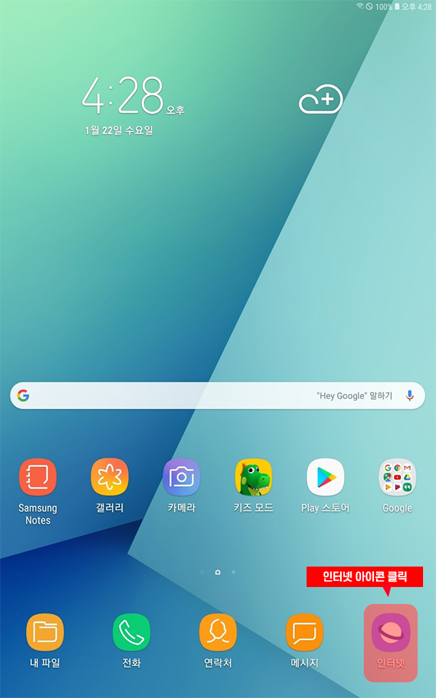주소창에 https://vpn.m119.go.kr 입력 후 해당 사이트 접속
안전 페이지로 들어가기 클릭하여 해당 사이트로 이동
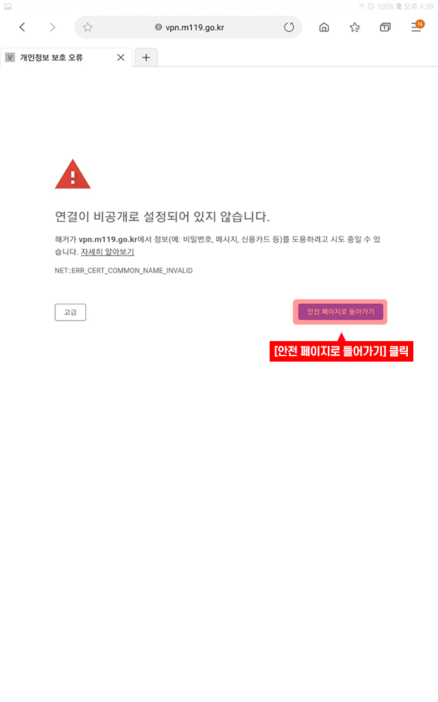주소창에 https://vpn.m119.go.kr 입력 후 해당 사이트 접속
※ 위 주소 클릭하여 해당 사이트로 이동
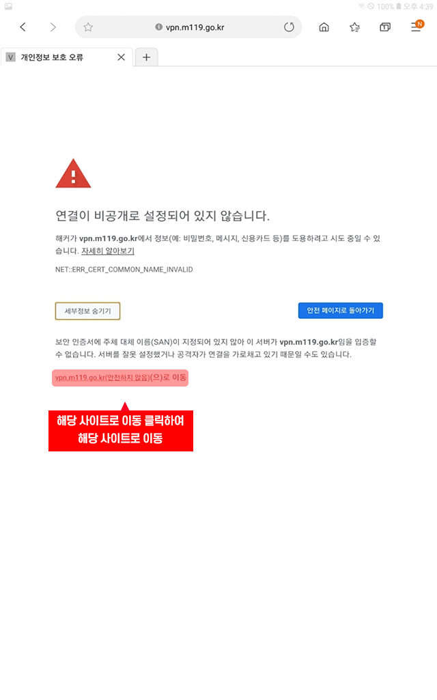파일 다운로드 클릭하여 설치 파일 다운로드 진행
※ 태블릿 버전 다운로드 진행해야 함
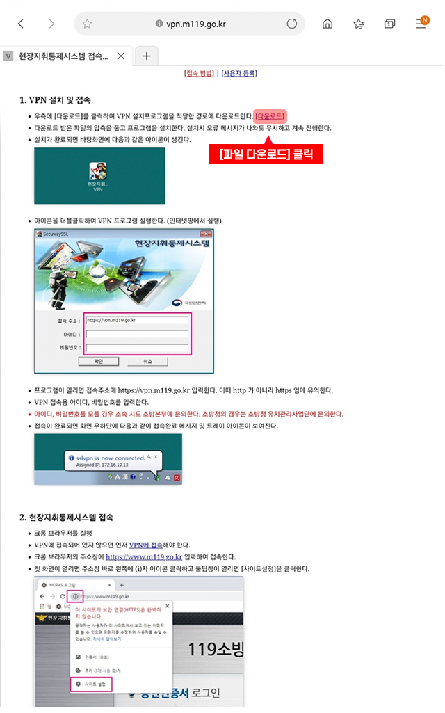보안 설정 버튼 클릭하여 설정 화면으로 이동
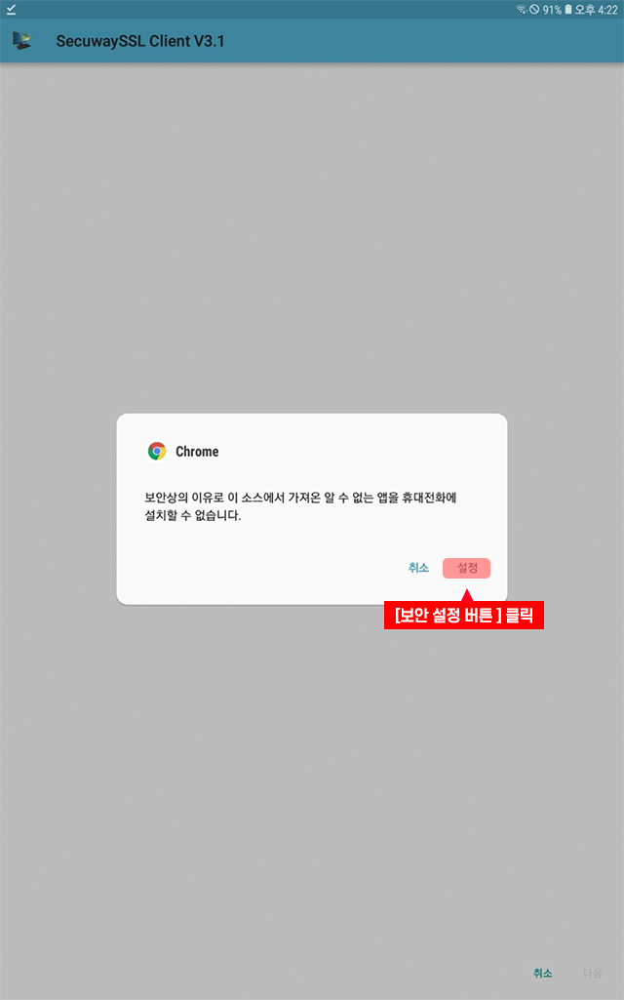출처를 알 수 없는 앱 설치 활성화
※ 회색 : 허용안함, 파랑색 : 허용
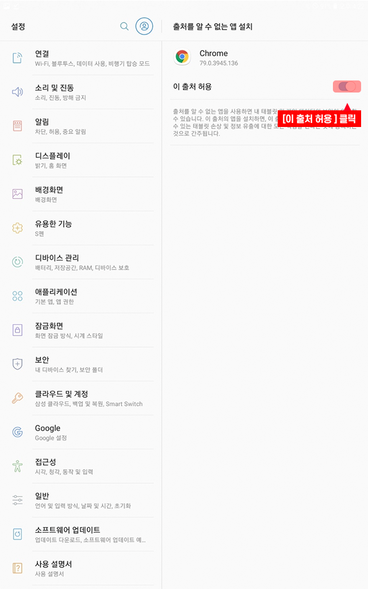설치 버튼 클릭하여 소프트웨어 설치 진행
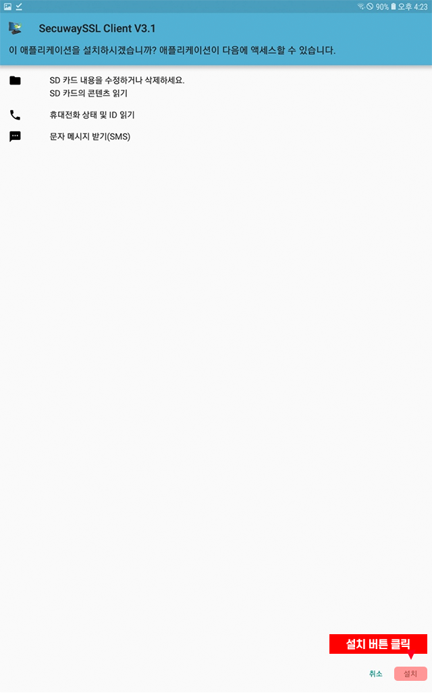설치 진행 중 화면 : 진행율 표시(파랑색 표시)
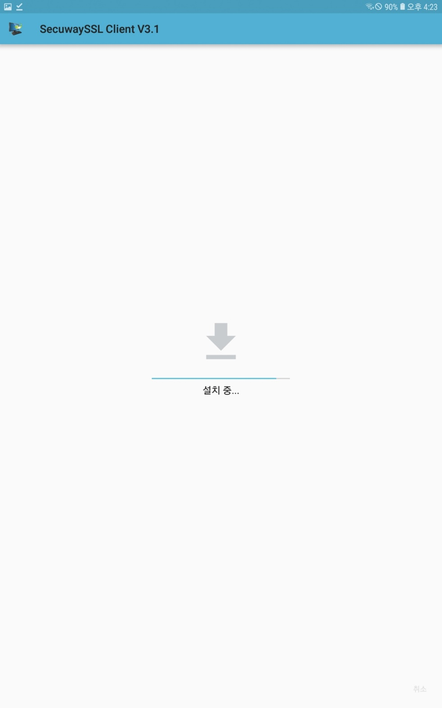설치 완료 메시지 표시
※ 완료 버튼 클릭 시 설치 종료 후 바탕화면으로 이동 열기 버튼 클릭 시 설치된 SSL VPN 클라이언트 프로그램 실행됨
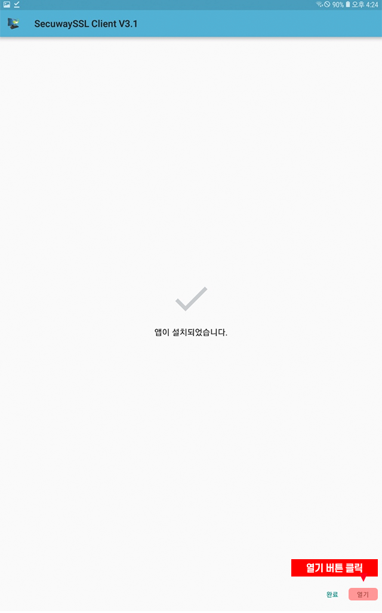URL 주소란에 https://vpn.m119.go.kr 입력 후 확인 버튼 클릭
※ https로 입력 필수
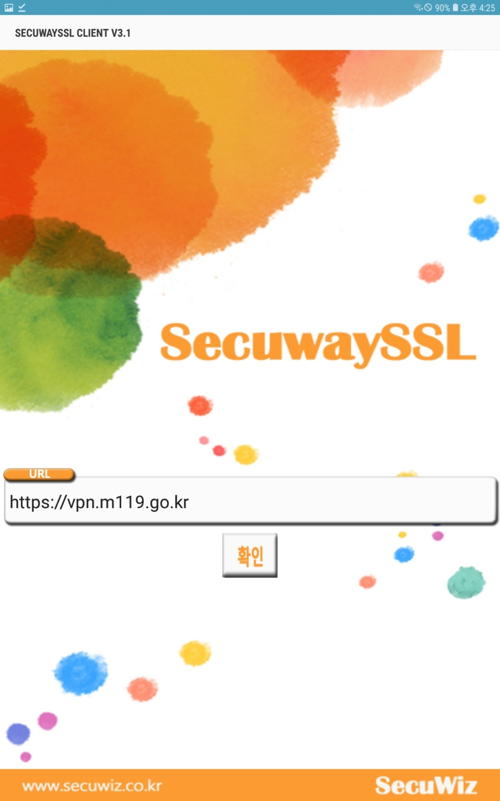ID 입력란에 시도별로 부여된 아이디 입력
비밀번호 입력 후 확인 버튼 클릭
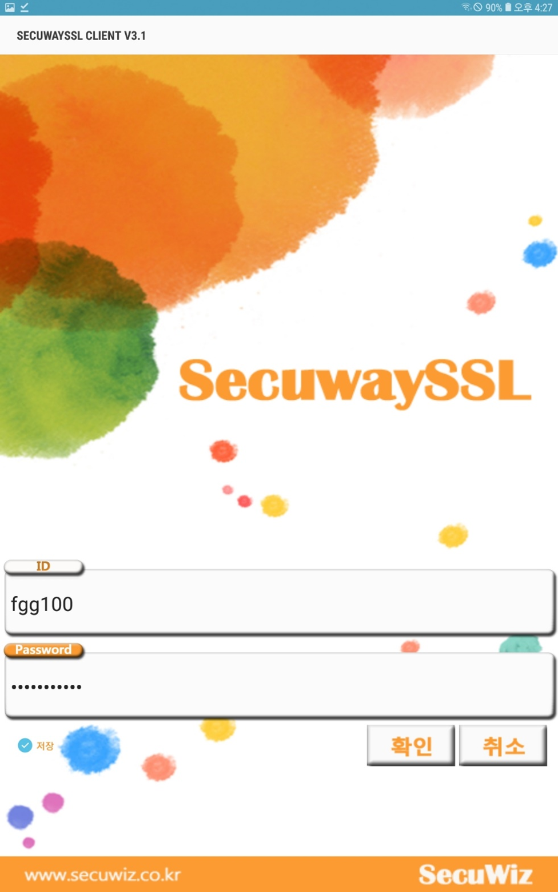출처 신회 여부 확인 메시지 출력 시 확인 버튼 클릭
확인버튼 클릭 후 잠시 기다리시면 VPN 연결이 활성화 됨
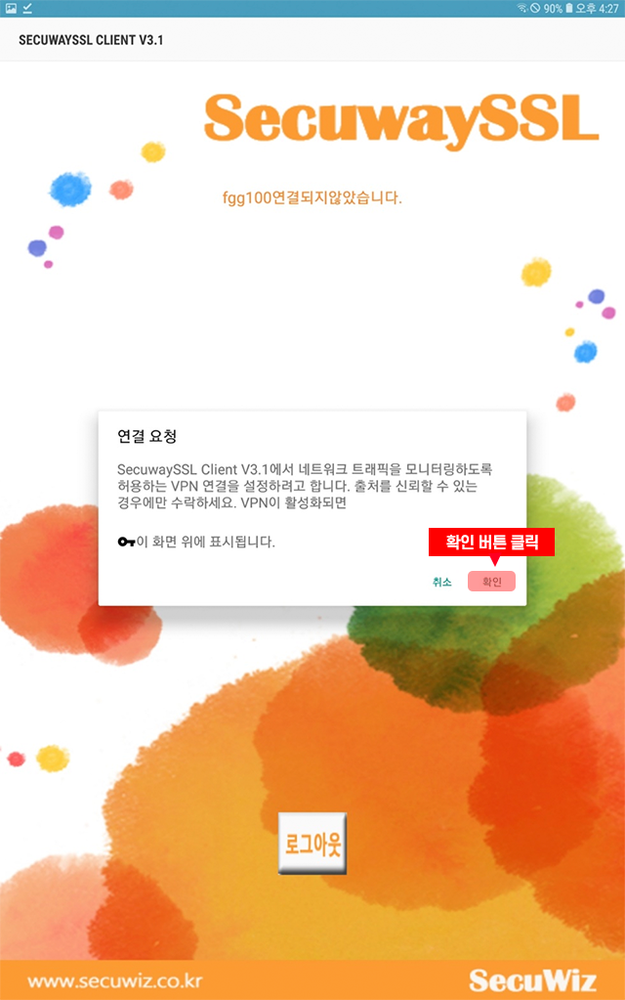VPN 클라이언트 정상 연결 후 아래 화면 표시
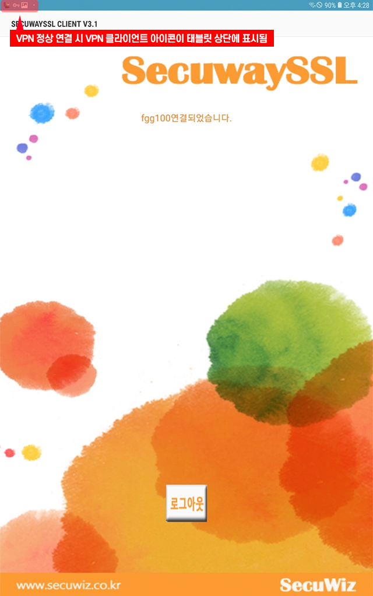태블릿 상단을 드래그하여 실행중인 작업화면 표시
표시된 목록 중 sslvpn 선택
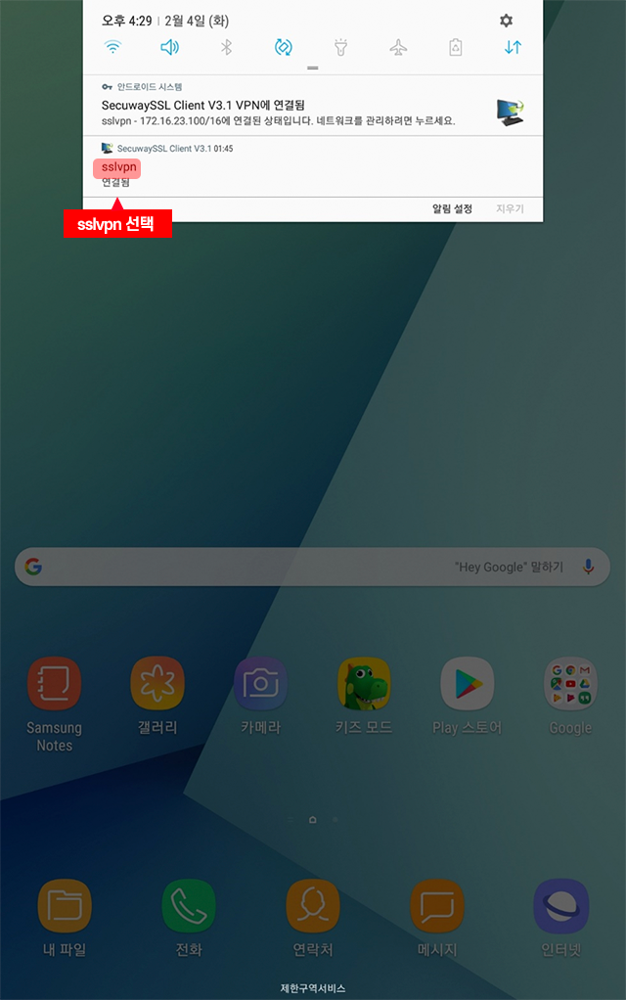sslvpn 실행 화면에서 하단 로그아웃 버튼 클릭
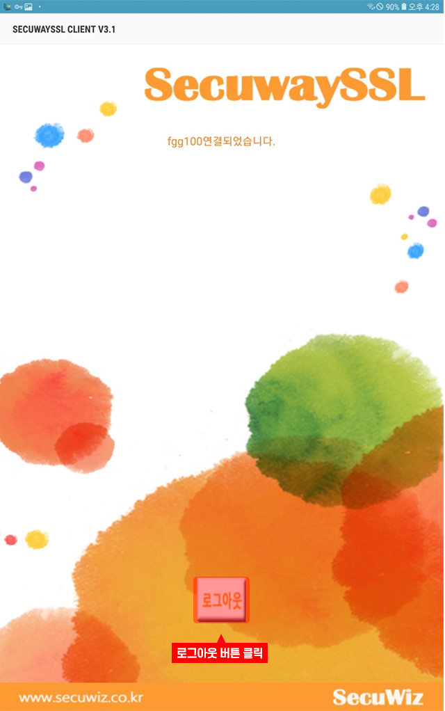